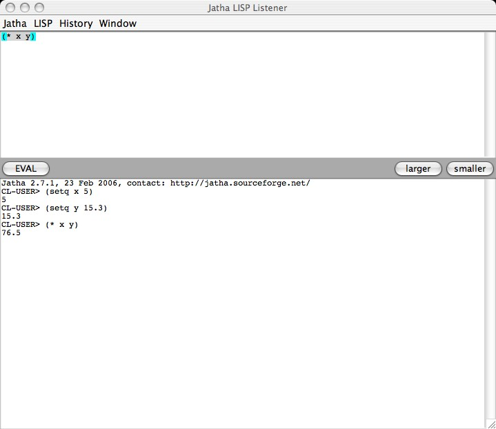
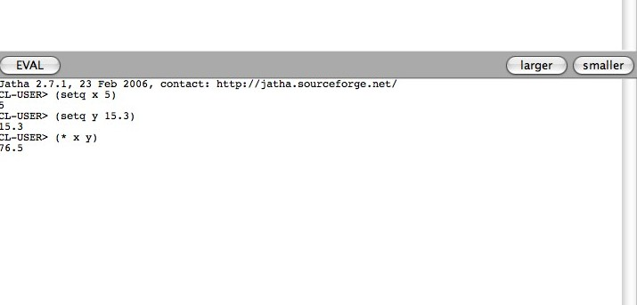

1. The Jatha GUI

2. Closeup of Jatha output
- Press EVAL to evaluate the expression(s) in the upper input window (or press CTRL-RETURN).
- Press LARGER to make the upper input window larger.
- Press SMALLER to make the upper input window smaller.
- You can recall any previous input from the HISTORY menu.
